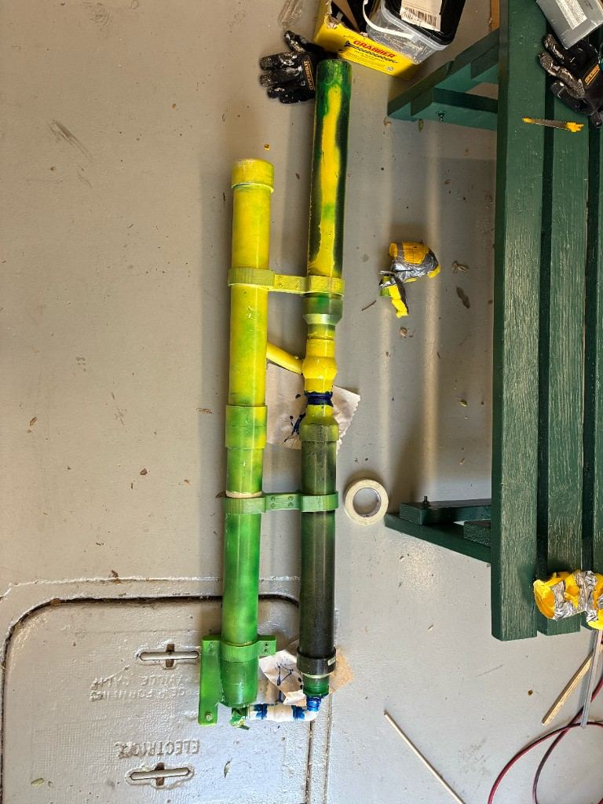
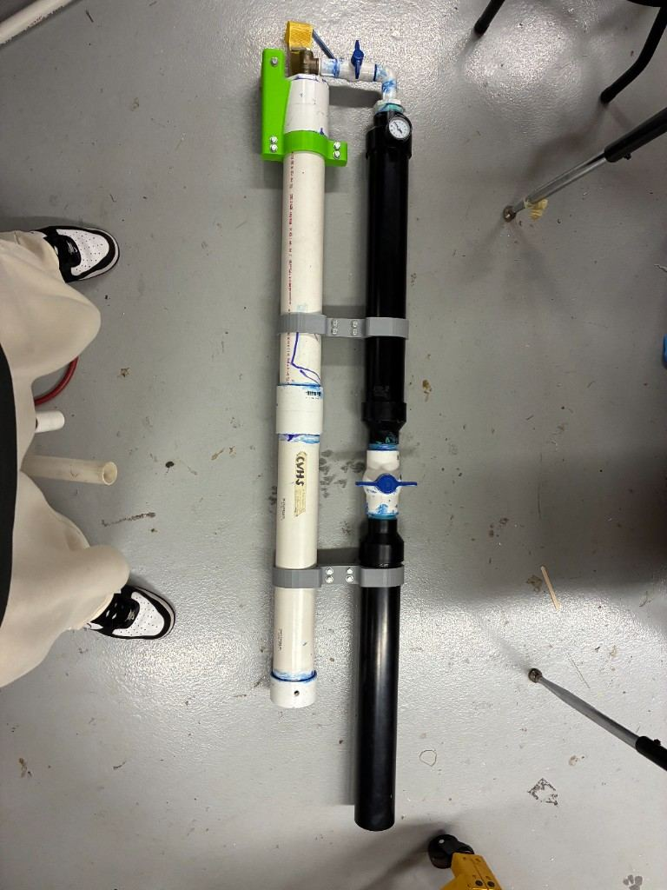
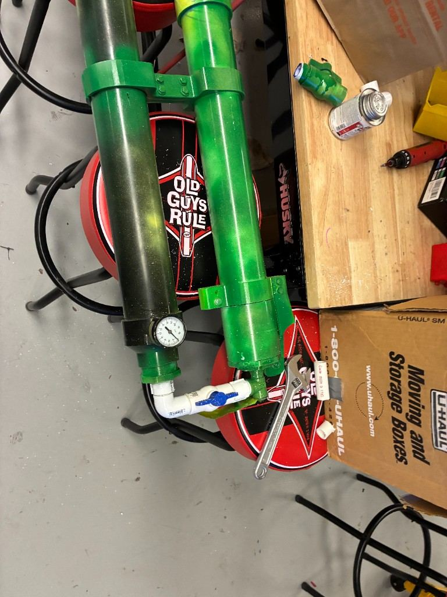
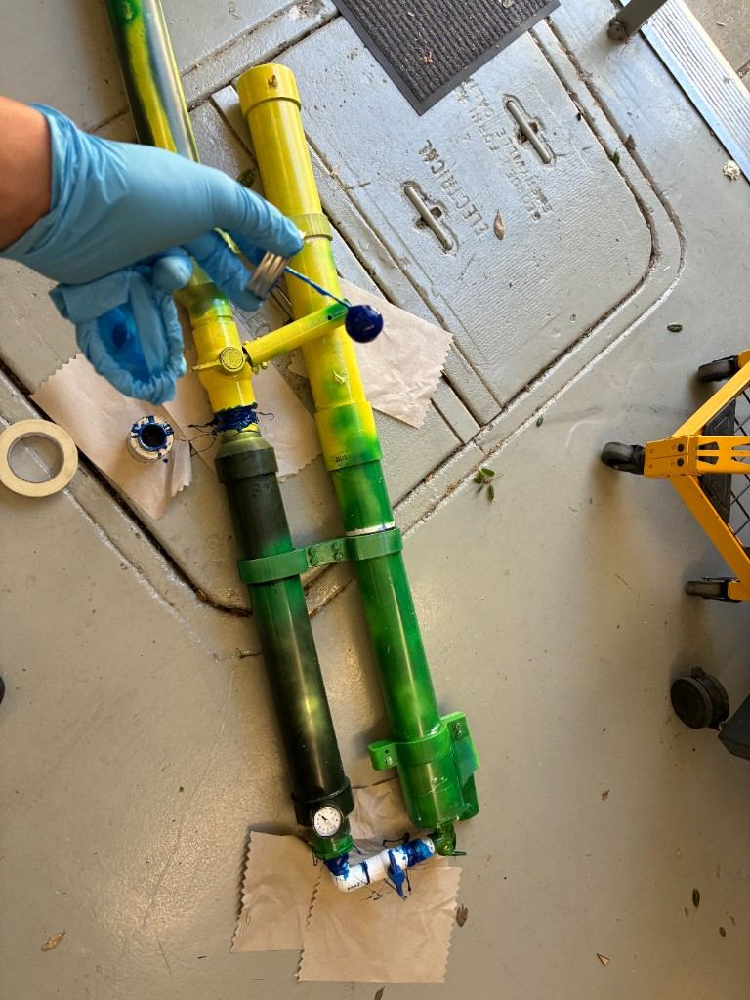

Elements A and C
Problem and Requirements
CVHS needs a safe, reliable, easy-to-use launcher that can send school event items farther than a normal throw without requiring Leadership students, coaches, or event staff to understand complicated launcher mechanics.
Stakeholders
- Leadership class
- Sports teams and coaches
- Students in the stands
- Event organizers
Design Requirements
- Learn operation in under 2 minutes.
- Reload in under 60 seconds.
- Reach at least 60 feet with a standard payload.
- Show pressure before every launch.
- Moveable by one or two students.
Element B
Prior Solutions
Hand Throwing
Very low cost and easy to understand, but range depends on strength, fatigue, and skill.
Previous School Cannon
Already demonstrated that a launcher can still fail if users do not want to set it up.
Commercial Launchers
Strong and polished, but too expensive for a low-cost school prototype.
Spring Concept
Mechanically direct, but required high spring force and difficult custom manufacturing.
Elements D, E, and F
Design Pivot
The project began with a spring-loaded cannon concept. That idea looked simple because a spring is familiar, but calculations and build planning showed that the required force would create manufacturing and safety problems. The final design pivoted to air pressure because it made the launch energy adjustable and testable in controlled steps.
Pressure Force
F = P x A
Compressed air applies force across the barrel area. More pressure generally means more launch force, limited by component ratings.
Projectile Motion
R = v^2 sin(2 theta) / g
Range depends on exit speed and angle. Shirts and confetti have drag, so measured data matters more than the ideal equation.
Element G
Final Prototype
The final prototype is an air pressure launcher made from paired pipe assemblies, a pressure gauge, valve hardware, 3D-printed or fabricated brackets, and a painted body. The design makes the pressure path visible so the operator can check the system before firing.

Subsystems
- Black pressure chamber stores compressed air before launch.
- Pressure gauge lets the operator confirm the launch pressure.
- Blue valve hardware controls the fill and release path.
- Yellow handle functions as the operator release control.
- Green/yellow launch tube guides the payload.
- Brackets keep the air chamber and launch tube aligned.






User Manual
Operating Cycle
The direction sheet reduces the launcher into a simple repeatable sequence. The user starts by preparing air pressure, loads the payload, fires, then returns to the refill and reload cycle.
Fill
Add air until the gauge reaches the selected safe pressure.
Load
Place the shirt, confetti, or test payload into the launch tube.
Fire
Point into the safe launch area and use the release handle.
Refill/Reload
Reset the valve path, refill air, and load the next payload.
Refire
Repeat the same pressure and loading process for consistent results.
Elements H and I
Testing and Analysis
The testing plan connects each major requirement to objective data: range, reload time, usability, and safety review.
| Test Condition | Trial 1 | Trial 2 | Trial 3 | Average |
|---|---|---|---|---|
| 30 psi range | 33 ft | 36 ft | 36 ft | 35 ft |
| 45 psi range | 61 ft | 65 ft | 63 ft | 63 ft |
| 60 psi range | 80 ft | 84 ft | 82 ft | 82 ft |
Element J
External Evaluation
The final portfolio should include feedback from at least one stakeholder and one technical reviewer. Use names, roles, dates, and direct comments.
Stakeholder Review
Placeholder: Leadership feedback said the gauge and checklist made the launcher easier to understand than the old cannon.
Technical Review
Placeholder: Technical feedback focused on pressure limits, permanent mounting, and clearer safety labels.
Elements K and L
Reflection and Recommendations
The biggest lesson from this project was that the simplest-looking design is not always the simplest design to build. The spring design looked simple on paper, but the force requirements made it risky and hard to manufacture. The air pressure version looked more complicated at first, but it was easier to adjust, test, and explain.
The pivot was the most important engineering decision. It showed that the design process is not about defending the first idea. It is about changing the design when evidence shows a better path.
Recommendations
- Add permanent brackets and a transport case.
- Attach the operating checklist directly to the frame.
- Test more payload shapes and masses.
- Add a fixed angle indicator for repeatability.
Appendix To Add
- CAD or labeled drawings
- Raw test data
- Build photos
- Reviewer feedback forms
- APA citations